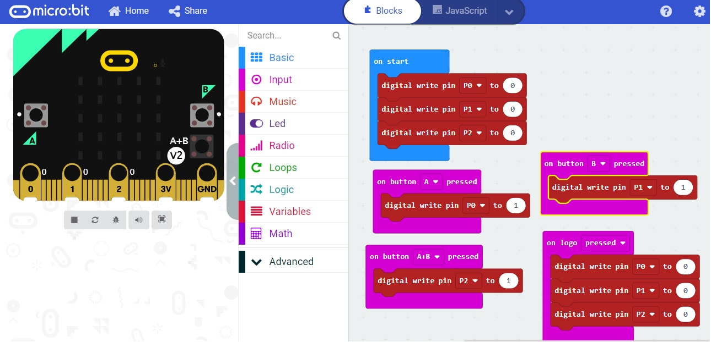

<h1>Virtual Environment, Outputs</h1>
You can also test your code by exercising it in the virtual/simulated microbit<br>
Create this code: <br>
<br>
Then press buttons on the left and see the result<br>
<hr>
